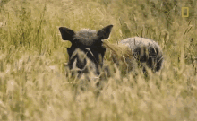

WARTHOGS
Warthogs are wild members of the pig family, known for their tusks, warts, and surprising speed. Despite their comical looks, they are resourceful and hardy creatures...
Drop by the warthog area to learn about their diet, behavior, and role in the savanna ecosystem. Discover why they’re much more than comic relief...
WHERE WILL YOU FIND THEM
You will find the warthogs at pen W09, along the savanna loop.